Testbericht 11 – Farben, Multi-Filament-3MF, dunkles Thema
1 Auftrag und Ergebnis
Drei Nutzerwünsche: Mehrfarbigkeit mit einem Export, den Bambu Studio „recht einfach mit mehreren Filamenten“ druckt; die CSS-Farben durch ein kleines, schönes Preset ersetzen (nur englische Namen, gedeckte Töne, Warnung und Zufallsfarbe bei unbekannten Namen); ein gründlich überarbeitetes dunkles Thema. Umgesetzt:
- Palette mit 16 Farben in
cad-eval(eine Quelle, für UI generiert), unbekannte Namen → Warnung „Farbexunbekannt – Zufallsfarbe“ und stabile Farbe aus dem Hash des Namens; Hex, Vektoren undalphaexakt (Abschnitt 2). - Farbregionen: jedes Bauteil wird über Kernel-Booleans in Körper je Farbe geteilt (gecacht), Summe der Volumen = Bauteilvolumen; Filament-Slots aus
color("teal", filament = 2)oder automatisch (Abschnitt 3). - 3MF für Bambu Studio / OrcaSlicer: ein Objekt je Bauteil, ein Teil je Farbe am selben Ursprung, Farbgruppe und
Metadata/model_settings.configmitextruderje Teil – das Format aus dem Quellcode der Slicer erarbeitet (Abschnitt 5), geprüft mit lib3mf, trimesh, einem Modell des Bambu-Importers und PrusaSlicer (Abschnitt 6). Dazu „ein STL je Farbe“ als ZIP. CLI:cad export -o x.3mfist mehrfarbig (--single-color),cad outlineundcad measure --colorszeigen Farben, Slots, Volumen und Masse. - UI: „Farben & Filamente“ (Farbfeld, Name, Zeilen, Slot-Auswahl, die
filament = nin den Code schreibt, Volumen und Masse bei PLA 1,24 g/cm³), Farbe je Fläche in der Ansicht, „Farbregionen zeigen“ (Abschnitt 7). - Dunkles Thema: Auswahl System (Standard, folgt
prefers-color-scheme, auch in Tauri)/Hell/Dunkel, Token-Satz mit WCAG-Prüfung (Text ≥ 4,5:1), Editor-Teile mit eigenem Standardthema angepasst, Palette-Farben im Dunkeln leicht aufgehellt;cad render --theme dark(Abschnitt 8).
2 Palette
Gewählt wurden die Namen, die in OpenSCAD-Dateien am häufigsten vorkommen – im Korpus der OpenSCAD-Beispiele und -Bibliotheken im Container red (11), green (7), cyan (7), yellow, gray, blue, black (je 2), magenta, lime; aus Erfahrung mit verbreiteten Projekten zusätzlich white, orange, silver, purple – und dazu teal, pink, brown als häufige Filamentfarben. Der Vorschlag indigo/slate entfiel: indigo liegt zwischen blue und purple (bei Deuteranopie kaum zu trennen), slate zwischen gray und blue; silver und magenta sind in OpenSCAD-Dateien häufiger. grey, aqua, fuchsia sind die CSS-Schreibweisen von gray, cyan, magenta; deutsche Namen gibt es nicht.
Werte: Zielwerte in OKLCH (Helligkeit L, Chroma C ≤ 0,18 – gedeckt, keine reinen RGB-Ecken –, Farbton h), mit einer Suche optimiert auf den kleinsten Abstand in OKLab bei normalem Sehen und für simulierte Deuteranopie und Protanopie (Machado, Oliveira, Fernandes 2009, Schwere 1,0, in linearem sRGB). Die Formeln stehen in palette.rs; cargo test -p cad-eval --test palette erzwingt die Mindestabstände, tools/palette/palette.py rechnet dieselben Werte nach.
| Name | Grundwert (Export) | hell angezeigt auf #e7eaee | dunkel angezeigt auf #16191d | Deut. | Prot. | Trit. | OKLCH (L · C · h) |
|---|---|---|---|---|---|---|---|
| red | #c74240 |
#c74240 4,06:1 |
#c74240 3,60:1 |
0,568 · 0,170 · 25,1 | |||
| orange | #dc813b |
#dc813b 2,40:1 |
#dc813b 6,08:1 |
0,690 · 0,140 · 55,1 | |||
| yellow | #f7d974 |
#f7d974 1,15:1 |
#f7d974 12,71:1 |
0,890 · 0,125 · 93,2 | |||
| lime | #91ca55 |
#91ca55 1,61:1 |
#91ca55 9,05:1 |
0,775 · 0,160 · 131,0 | |||
| green | #4ca167 |
#4ca167 2,64:1 |
#4ca167 5,54:1 |
0,641 · 0,120 · 151,9 | |||
| teal | #217274 |
#217274 4,67:1 |
#307e80 3,71:1 |
0,506 · 0,075 · 197,5 | |||
| cyan | #6eccec |
#6eccec 1,51:1 |
#6eccec 9,67:1 |
0,799 · 0,100 · 222,5 | |||
| blue | #2e65b9 |
#2e65b9 4,73:1 |
#3a71c6 3,66:1 |
0,515 · 0,145 · 258,8 | |||
| purple | #693d8c |
#693d8c 6,57:1 |
#754999 2,66:1 |
0,450 · 0,130 · 307,7 | |||
| magenta | #cd67b7 |
#cd67b7 2,80:1 |
#cd67b7 5,22:1 |
0,660 · 0,161 · 336,1 | |||
| pink | #f7b8c6 |
#f7b8c6 1,38:1 |
#f7b8c6 10,60:1 |
0,844 · 0,075 · 4,1 | |||
| brown | #6e4223 |
#6e4223 7,05:1 |
#7a4d2e 2,46:1 |
0,425 · 0,076 · 54,3 | |||
| black | #202225 |
#202225 13,21:1 |
#3b3d41 1,62:1 |
0,251 · 0,006 · 258,4 | |||
| gray | #7b7d81 |
#7b7d81 3,42:1 |
#7b7d81 4,28:1 |
0,589 · 0,007 · 264,5 | |||
| silver | #abaeb2 |
#abaeb2 1,85:1 |
#abaeb2 7,92:1 |
0,750 · 0,007 · 255,5 | |||
| white | #f4f3f0 |
#e9e8e5 1,02:1 |
#f4f3f0 15,89:1 |
0,964 · 0,004 · 91,4 | |||
| Standard (ohne color()) | #c3c8cf | Material ohne color() in Exporten und in der Farbliste; in der Ansicht die Modellfarbe des Themas (--view-model) | |||||
Streifen: Palette normal, simuliert Deuteranopie, Protanopie, Tritanopie.
| Sicht | kleinste Abstände ΔEOK (OKLab, ~0,02 gerade sichtbar) |
|---|---|
| normales Sehen | cyan/silver 0,107 · teal/gray 0,111 · pink/silver 0,122 · teal/blue 0,128 · blue/purple 0,132 |
| Deuteranopie (Grün) | red/green 0,070 · green/gray 0,076 · blue/purple 0,077 · orange/lime 0,078 · cyan/silver 0,080 |
| Protanopie (Rot) | orange/green 0,052 · cyan/pink 0,054 · teal/gray 0,058 · pink/silver 0,063 · red/teal 0,078 |
| Tritanopie (Blau) | teal/blue 0,031 · yellow/pink 0,056 · lime/silver 0,056 · orange/magenta 0,058 · purple/brown 0,067 |
- Anzeige je Thema (gleiche Namen, gleicher Farbton): im dunklen Thema wird Schwarz auf L 0,36 angehoben (#3b3d41) und dunkle Töne (teal, blue, purple, brown) um +0,04 heller; im hellen Thema wird Weiß auf L 0,93 abgesenkt (#e9e8e5). Exporte, STEP und 3MF nutzen die Grundwerte. Die Kontrastangabe in der Tafel ist die der flachen Farbe zum Hintergrund der 3D-Ansicht; Körper sind schattiert und haben Kantenlinien, daher sind auch Weiß (hell) und Schwarz (dunkel) zu sehen, aber nur knapp.
- Farbfehlsichtigkeit: 16 Farben lassen sich nicht für alle Formen gut trennen. Bei Deuteranopie liegen red/green (0,070), green/gray und blue/purple am nächsten, bei Protanopie orange/green (0,052), bei der seltenen Tritanopie teal/blue (0,031) – die Liste zeigt deshalb immer Namen und Slot zur Farbe.
- Unbekannte Namen: Farbton aus FNV-1a 64 des kleingeschriebenen Namens, L = 0,65 und C = 0,125 (Mediane der zwölf bunten Palettenfarben, C kleiner, bis der Wert in sRGB liegt). Gleicher Name → gleiche Farbe, auch über Sitzungen, CLI und UI hinweg.
| Eingabe | Farbe | Quelle |
|---|---|---|
color("lightblue") | #bd70af | random |
color("Rot") | #d06f65 | random |
color("salmon") | #8a82d7 | random |
color("navy") | #b78520 | random |
color("gold") | #219bce | random |
color("olive") | #cf6c7f | random |
zufall.scad:1:7: Warnung (Auswertung): Farbe `lightblue` unbekannt – Zufallsfarbe (Palette: red, orange, yellow, lime, green, teal, cyan, blue, purple, magenta, pink, brown, black, gray, silver, white) zufall.scad:2:7: Warnung (Auswertung): Farbe `Rot` unbekannt – Zufallsfarbe (Palette: red, orange, yellow, lime, green, teal, cyan, blue, purple, magenta, pink, brown, black, gray, silver, white) zufall.scad:3:7: Warnung (Auswertung): Farbe `salmon` unbekannt – Zufallsfarbe (Palette: red, orange, yellow, lime, green, teal, cyan, blue, purple, magenta, pink, brown, black, gray, silver, white)
3 Regeln: Farbregionen und Filamente
Farbregionen (Volumen je Farbe)
- Der Körper eines gefärbten Teilbaums gehört seiner Farbe: das Ergebnis des
color()-Knotens, ins System des Bauteils gelegt (lokale Matrizen undresize-Faktoren auf dem Weg). - Überlappen sich Farben, gewinnt die spätere Anweisung, die frühere wird um sie verringert; „später“ heißt Pre-Order im Baum: ein inneres
color()nach dem äußeren, ein späteres Geschwister nach dem früheren. - Abgezogenes gilt für alle: jedes Stück wird mit dem Ergebnis geschnitten (
differencenimmt allen Farben das Loch); Farben, die nur in abgezogenen Operanden vorkommen, bekommen keinen Slot. - Material in keinem gefärbten Teilbaum (z. B. die Verrundung zwischen zwei Farben) gehört zur Farbe am Bauteil, sonst zum Standard-Eintrag (wenn das Bauteil ungefärbte Primitive hat), sonst zur ersten Farbe des Bauteils.
- Rechnung:
Stück(C) = R ∩ M(C) − ⋃ M(später), RestR − ⋃ M, Stücke einer Farbe vereinigt, leere verworfen; je Farbknoten etwa drei Booleans. Ergebnis je Bauteil eine Liste (Farbe, Slot, Körper) mit Volumen; weicht die Summe vom Bauteilvolumen ab, warnt die Engine („Farbregionen ungenau“). Gecacht unter Bauteil, Farbknoten, Lagen und Farben; Farbe und Slot sind nicht Teil der Knotenschlüssel – eine neue Farbe oder ein neuer Slot rechnet keinen Knoten neu (Testregions_are_cached…). Ohne Farbknoten unter dem Bauteil gibt es keinen Boolean: eine Region aus den Körpern des Bauteils, Volumen = gecachtes Bauteilvolumen (Testuncoloured_part_needs_no_boolean).
Filament-Slots
color("teal", filament = 2)legt den Slot der Farbe fest (1–16, benanntes Argument; die erste Angabe gilt, ein Widerspruch warnt).- Material ohne
color()(„Standard“, #c3c8cf) druckt mit Slot 1. - Alle anderen Farben bekommen in Reihenfolge ihres ersten Auftretens den niedrigsten freien Slot. Gleiche Farbe in anderer Schreibweise (
"gray","GREY","#7b7d81") ist derselbe Eintrag. - Slot in der UI ändern = Text-Edit (
SetFilament): jedecolor()-Anweisung der Farbe mitfilament = …bekommt den neuen Wert, sonst die erste, filament = n; „automatisch“ entfernt das Argument. Begründung: der Code bleibt die einzige Quelle (CLI-Export und UI-Export stimmen überein, der Agent sieht dasselbe), Undo und Git-Rand erfassen die Änderung; ein Vorschau-Override wie in der Parameterleiste ginge beim Speichern verloren und wäre für den Export eine zweite Wahrheit.
4 Beispielmodell examples/spec/mehrfarbig.scad
Türschild (weiße Platte, Rahmen teal, Schrift „CAD“ als Relief in red mit festem Slot 3, abgezogene Aufhängebohrung) und Spielfigur (blauer Körper aus Sockel und gedrehtem Profil, weißer Kragen, gelber Kopf) als zwei Bauteile.
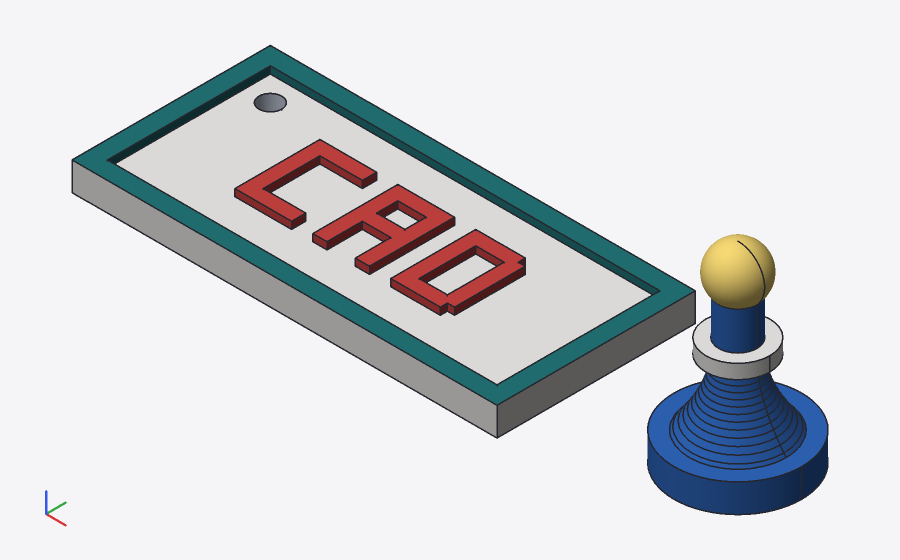
cad render – Farbe je Fläche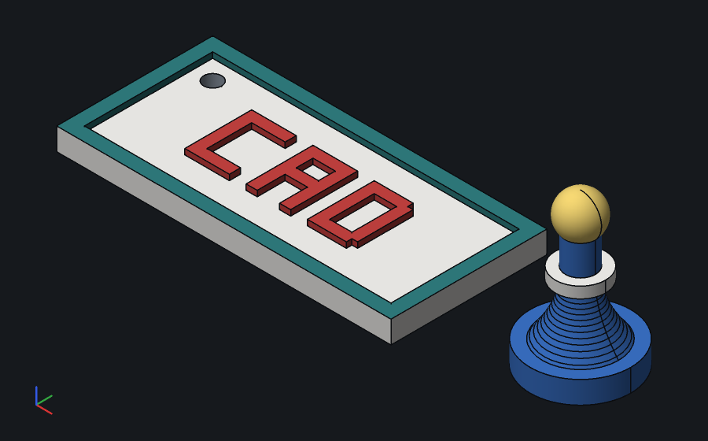
cad render --theme dark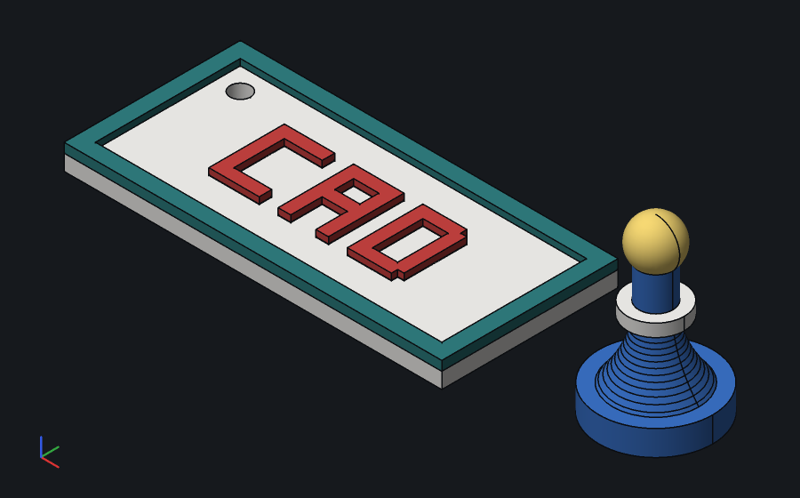
--show regions --theme dark: Körper je Farbe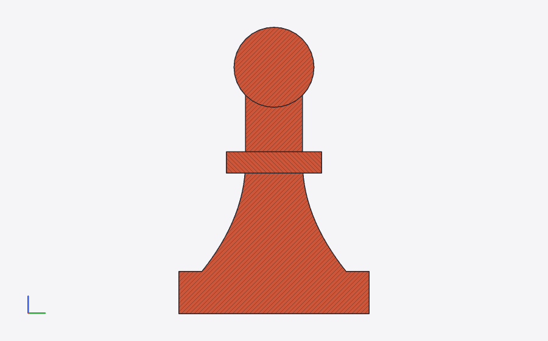
--section x=80 --part figur --show regions --view right: Schnitt durch die Regionskörper; die Kappen sind wie immer rot schraffiert, die Konturen zeigen die Grenzen zwischen Kopf (gewinnt im Hals), Kragen und Körper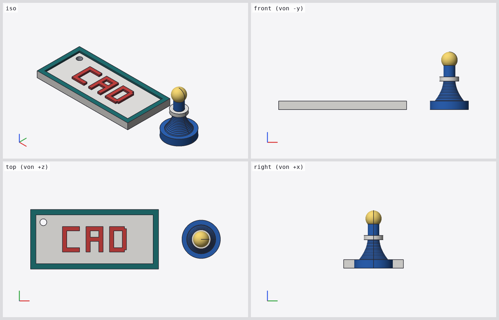
Farben und Volumen (cad measure --colors)
| Slot | Farbe | Quelle | Zeilen | Volumen | Masse PLA |
|---|---|---|---|---|---|
| F1 | white #f4f3f0 | palette | 36, 66 | 4.900,8 mm³ | 6,08 g |
| F2 | teal #217274 | palette | 37 | 622,5 mm³ | 0,77 g |
| F3 (filament = 3) | red #c74240 | palette | 42 | 208,8 mm³ | 0,26 g |
| F4 | blue #2e65b9 | palette | 61 | 1.689,3 mm³ | 2,09 g |
| F5 | yellow #f7d974 | palette | 67 | 226,2 mm³ | 0,28 g |
| Bauteil | Regionen (Slot, Farbe, mm³) | Summe | Bauteilvolumen | Warnung |
|---|---|---|---|---|
| schild | F1 white 4.773,57 · F2 teal 622,50 · F3 red 208,80 | 5.604,873 | 5.604,873 | – |
| figur | F4 blue 1.689,33 · F1 white 127,23 · F5 yellow 226,24 | 2.042,797 | 2.042,797 | – |
Quelltext
// Zweck: Mehrfarbig drucken (Bericht 11) – Türschild mit Schrift-Relief und Spielfigur als
// zwei Bauteile, Farben aus der Palette, ein fester Filament-Slot; Export als 3MF mit einem
// Teil je Farbe für Bambu Studio / OrcaSlicer.
// Blockbuchstaben aus Balken: s = Strichstärke, b × h = Feld des Buchstabens.
module balken(x, y, w, h, t) translate([x, y, 0]) cube([w, h, t]);
module buchstabe(c, b = 8, h = 12, s = 2, t = 1.2) {
if (c == "C") {
balken(0, 0, s, h, t);
balken(0, h - s, b, s, t);
balken(0, 0, b, s, t);
} else if (c == "A") {
balken(0, 0, s, h, t);
balken(b - s, 0, s, h, t);
balken(0, h - s, b, s, t);
balken(0, h / 2 - s / 2, b, s, t);
} else if (c == "D") {
// Balken überlappen (nur Kanten berühren gäbe keinen geschlossenen Körper)
balken(0, 0, s, h, t);
balken(0, h - s, b - s / 2, s, t);
balken(0, 0, b - s / 2, s, t);
balken(b - s, s / 2, s, h - s, t);
}
}
module schild(w = 60, d = 28, t = 3, rand = 2.5) {
grid g {
x: links = 0, schrift = 15, rechts = w;
y: vorne = 0, zeile = 8, hinten = d;
z: boden = 0, oben = t;
}
difference() {
union() {
// Grundplatte weiß, Rahmen petrol (sitzt auf der Platte)
color("white") box(g[links, vorne, boden], g[rechts, hinten, oben]);
color("teal") difference() {
box(g[links, vorne, oben] - [0, 0, 0.5], g[rechts, hinten, oben] + [0, 0, 1]);
box(g[links, vorne, oben] + [rand, rand, -1], g[rechts, hinten, oben] - [rand, rand, -2]);
}
// Schrift-Relief rot, auf Filament 3 festgelegt
color("red", filament = 3)
for (i = [0:2]) translate(g[schrift, zeile, oben] + [i * 11, 0, -0.2]) buchstabe(["C", "A", "D"][i]);
}
// Aufhängebohrung: abgezogen, gilt für alle Farben
translate(g[links, hinten, boden] + [6, -6, -1]) cylinder(h = t + 3, r = 1.6);
}
}
module spielfigur(r = 9, h = 26) {
grid p {
x: achse = 0, hals = r * 0.3, rand = r * 0.85, fuss = r;
y: boden = 0, sockel = 4, mitte = h * 0.55, kopf = h * 0.8;
}
// Profil: vom Rand des Sockels zum Hals (quadratisch), dann gerade bis zum Kopf
z0 = p.sockel - 1;
profil = concat(
[[0, z0]],
[for (i = [0:16]) let (t = i / 16) [p.hals + (p.rand - p.hals) * (1 - t) * (1 - t), z0 + t * (p.mitte - z0)]],
[[p.hals, p.kopf], [0, p.kopf]]);
color("blue") {
cylinder(h = p.sockel, r = p.fuss);
rotate_extrude() polygon(profil);
}
// weißer Kragen und gelber Kopf: spätere Anweisungen gewinnen bei Überlappung
color("white") translate([0, 0, p.mitte - 1]) cylinder(h = 2, r = r * 0.5);
color("yellow") translate([0, 0, p.kopf + 2.5]) sphere(r * 0.42);
}
// Spielfigur neben dem Schild (eigenes Bauteil = eigenes Objekt im Slicer)
module figur(at = [80, 14, 0]) translate(at) spielfigur();
schild: schild();
figur: figur();
5 3MF für Bambu Studio und OrcaSlicer
Struktur
Archive: mehrfarbig.3mf
Length Date Time Name
--------- ---------- ----- ----
371 1980-01-01 00:00 [Content_Types].xml
260 1980-01-01 00:00 _rels/.rels
603415 1980-01-01 00:00 3D/3dmodel.model
1171 1980-01-01 00:00 Metadata/model_settings.config
--------- -------
605217 4 files
3D/3dmodel.model(Kern 2015/02 + Materials-Erweiterung):m:colorgroupmit einerm:colorje Farbe (#RRGGBBAA); je (Bauteil, Farbe) ein Netz-Objekt mitpid/pindex(Farbe auf Objektebene); je Bauteil ein Objekt mitcomponentsohnetransform(alle Netze im selben Koordinatensystem – nichts wird verschoben); ein Build-Item je Bauteil.Application= „controller-cad 0.1.0“.Metadata/model_settings.config: je Bauteil<object id>(= Build-Item) mitnameundextruder(Slot der größten Farbe), je Farbe<part id>(= ID des Netz-Objekts) mitnameundextruder= Slot.- Kein
Metadata/project_settings.config(siehe Annahmen). Content-Type für.configeingetragen.
<?xml version="1.0" encoding="UTF-8"?>
<model unit="millimeter" xml:lang="en-US" xmlns="http://schemas.microsoft.com/3dmanufacturing/core/2015/02" xmlns:m="http://schemas.microsoft.com/3dmanufacturing/material/2015/02">
<metadata name="Application">controller-cad 0.1.0</metadata>
<resources>
<m:colorgroup id="1">
<m:color color="#F4F3F0FF"/>
<m:color color="#217274FF"/>
<m:color color="#C74240FF"/>
<m:color color="#2E65B9FF"/>
<m:color color="#F7D974FF"/>
</m:colorgroup>
<vertex x="6.8755355" y="23.339193" z="0"/>
<vertex x="60" y="28" z="0"/>
…
<object id="5" type="model" name="schild">
<components>
<component objectid="2"/>
<component objectid="3"/>
<component objectid="4"/>
</components>
…
<build>
<item objectid="5"/>
<item objectid="9"/>
</build>
<?xml version="1.0" encoding="UTF-8"?>
<config>
<object id="5">
<metadata key="name" value="schild"/>
<metadata key="extruder" value="1"/>
<part id="2" subtype="normal_part">
<metadata key="name" value="schild – white"/>
<metadata key="extruder" value="1"/>
</part>
<part id="3" subtype="normal_part">
<metadata key="name" value="schild – teal"/>
<metadata key="extruder" value="2"/>
</part>
<part id="4" subtype="normal_part">
<metadata key="name" value="schild – red"/>
<metadata key="extruder" value="3"/>
</part>
</object>
<object id="9">
<metadata key="name" value="figur"/>
<metadata key="extruder" value="4"/>
<part id="6" subtype="normal_part">
<metadata key="name" value="figur – blue"/>
<metadata key="extruder" value="4"/>
</part>
<part id="7" subtype="normal_part">
<metadata key="name" value="figur – white"/>
<metadata key="extruder" value="1"/>
</part>
<part id="8" subtype="normal_part">
<metadata key="name" value="figur – yellow"/>
<metadata key="extruder" value="5"/>
</part>
</object>
</config>
Annahmen und ihre Quellen
Gelesen im Quellcode von Bambu Studio (bambulab/BambuStudio, Zweig master) und OrcaSlicer (SoftFever/OrcaSlicer, Zweig main), abgerufen am 23.10.2026 über raw.githubusercontent.com (Prüfsummen unten):
- Fremde 3MF: Bambu Studio gilt eine Datei als eigene nur, wenn
Applicationmit „BambuStudio-“ beginnt (_handle_end_metadata, OrcaSlicer zusätzlich „OrcaSlicer-“). Wir geben uns nicht als Bambu Studio aus; die Datei wird als „From_Other“ geladen (Model::read_from_archive; PrusaSlicer-Dateien erkenntPrusaFileParseram Namen „PrusaSlicer“). model_settings.configwird auch für fremde Dateien gelesen (_load_model_from_file, ZweigBBS_MODEL_CONFIG_FILE; Fehler nur für eigene Dateien fatal).<object id>wird über die ID des Build-Item-Objekts zugeordnet,<part id>über die ID des Unterobjekts (_handle_start_config_volume: ohne Dreiecksbereich zähltsubobject_id;_generate_volumes_newsuchtvolume_iter.subobject_id == sub_object->id). Alle übrigen Schlüssel einerpartlanden in der Volumen-Konfiguration (volume->config.set_deserialize), also auchextruder.- Komponenten ohne
p:pathverweisen auf Objekte derselben Datei (_handle_start_component: Pfad leer = aktuelles Modell);_generate_current_object_listlöst sie in Unterobjekte auf, jede Komponente wird ein Teil (Volumen) desselben Objekts mit der Transformation der Komponente (hier keine). - Ein Volumen: nach dem Laden entfernt der Importer das
extrudereines einzigen Volumens; dann gilt das des Objekts – deshalb schreiben wir es auch am Objekt. - Farben: der Parser vergleicht Elementnamen wörtlich mit
m:colorgroup/m:color(Präfixmnötig). Mitpid/pindexam Netz-Objekt bekommt jedes Dreieck die Farbe (_handle_start_triangle), und das aktuelle Bambu Studio bietet beim Öffnen den Farbdialog an (Plater.cpp:extract_colors_to_obj_dialog,ObjColorDialog); „Append“ fügt die Farben als Filamente hinzu, und bei Farben je Volumen setztObjColorPanel::apply_volume_filament_idsdie Extruder je Volumen, ohne die Volumengrenzen zu übermalen. Ältere Versionen und OrcaSlicer nutzen die Farbgruppe nur auf Objektebene und ohne Metadaten. - Kein
project_settings.config: Bambu Studio lädt es nur aus eigenen Dateien (dont_load_config = trueohne Generator-Version); OrcaSlicer lädt es immer und legt es über seine Standardwerte (config += config_loaded) – eine Datei nur mitfilament_coloursetzte dort Drucker- und Prozesseinstellungen zurück. Die Filamentfarben kommen deshalb aus dem Farbdialog (Bambu) oder vom Nutzer/AMS-Abgleich. - Fehlende Filamente: beim Import (nur Geometrie) ergänzt Bambu Studio die Filamentliste bis zum höchsten
extruderder Datei (Plater.cpp: „add extruder … if only import geometry“, mit Farben ausget_next_color_for_filament).
b725d2c7d872c7e4ba31fa6d67c333d59da939e417d02eae16d8e9a15fa16608 SoftFever/OrcaSlicer main/src/libslic3r/Format/bbs/3mf.cpp c32c66d03d16fe17cf5f4cde3ac68025791b20f423984aac4694094d6033d650 SoftFever/OrcaSlicer main/src/slic3r/GUI/Plater.cpp 21a31bca20d5de47ac350342fcaaa4794ed5d1b2157869b2d6afe3f145a5c4dd bambulab/BambuStudio master/src/libslic3r/Format/3mf.cpp b5da58b9404d8bdb6b14f0920e63fe16e2a94175f78056cece44074011e0056c bambulab/BambuStudio master/src/libslic3r/Format/bbs/3mf.cpp 84843d5f4910909abc37403ad2dfc1ff404a51c134f8a207d55ab571d1223792 bambulab/BambuStudio master/src/libslic3r/Model.cpp c6f9aa6c45c04c2849118a11bc0c0c81329aec9cf9817eb01edd7733210f2765 bambulab/BambuStudio master/src/slic3r/GUI/ObjColorDialog.cpp 4a5a4db32d9ae48e98ba0e53c1fba5cf6700eb67cb2746318627b43c4add86d8 bambulab/BambuStudio master/src/slic3r/GUI/Plater.cpp
6 Prüfung der 3MF
tools/report/verify3mf.py auf der Datei von cad export examples/spec/mehrfarbig.scad --part schild --part figur -o mehrfarbig.3mf, erwartete Werte aus cad measure --colors --json:
lib3mf 2.5.0: 6 Netze, 2 Komponentenobjekte, 2 Build-Items, 5 Farben, Warnungen 0, alle mannigfaltig: True trimesh 5.1.1: 6 Geometrien, wasserdicht: True Bambu/Orca-Import (Modell): Objekt schild: schild – white → Extruder 1 #F4F3F0FF, schild – teal → Extruder 2 #217274FF, schild – red → Extruder 3 #C74240FF Bambu/Orca-Import (Modell): Objekt figur: figur – blue → Extruder 4 #2E65B9FF, figur – white → Extruder 1 #F4F3F0FF, figur – yellow → Extruder 5 #F7D974FF PrusaSlicer (PrusaSlicer-2.7.2+UNKNOWN based on Slic3r (with GUI support)): 6 Objekte, Exit 0 schild white: F1 Bambu 1, B-Rep 4773.57 Netz 4773.64 mm³ ok schild teal: F2 Bambu 2, B-Rep 622.50 Netz 622.50 mm³ ok schild red: F3 Bambu 3, B-Rep 208.80 Netz 208.80 mm³ ok figur blue: F4 Bambu 4, B-Rep 1689.33 Netz 1688.17 mm³ ok figur white: F1 Bambu 1, B-Rep 127.23 Netz 127.03 mm³ ok figur yellow: F5 Bambu 5, B-Rep 226.24 Netz 225.32 mm³ ok alle Prüfungen bestanden
| Bauteil | Farbe | Slot | Extruder (Bambu-Modell) | Farbe in 3MF | Volumen B-Rep | Volumen Netz | |
|---|---|---|---|---|---|---|---|
| schild | white | F1 | 1 | #F4F3F0FF | 4.773,573 | 4.773,635 | ok |
| schild | teal | F2 | 2 | #217274FF | 622,500 | 622,500 | ok |
| schild | red | F3 | 3 | #C74240FF | 208,800 | 208,800 | ok |
| figur | blue | F4 | 4 | #2E65B9FF | 1.689,325 | 1.688,168 | ok |
| figur | white | F1 | 1 | #F4F3F0FF | 127,235 | 127,029 | ok |
| figur | yellow | F5 | 5 | #F7D974FF | 226,237 | 225,322 | ok |
- lib3mf 2.5.0 (Bibliothek des 3MF-Konsortiums): liest ohne Warnung, 6 Netze, alle mannigfaltig und orientiert (
IsManifoldAndOriented), Komponenten und Build-Items ohne Transformation, Farbe je Netz aus der Farbgruppe. - trimesh 5.1.1: 6 Geometrien, alle wasserdicht.
- Bambu/Orca-Modell: der Importer nachgebaut (Abschnitt 5): Build-Item → Komponenten → Unterobjekte, Teile über
part id, Extruder je Teil, Farbe je Teil; Datei nicht als Bambu-Projekt erkannt (gewollt), keinproject_settings.config. Volumen B-Rep ↔ Netz innerhalb 0,5 %. - PrusaSlicer PrusaSlicer-2.7.2+UNKNOWN based on Slic3r (with GUI support) (apt, CLI
--info): lädt die Datei, 6 Objekte (je Netz eines, an der richtigen Stelle; PrusaSlicer liestmodel_settings.confignicht und macht aus Komponenten fremder Dateien eigene Objekte), alle mannigfaltig, Volumen wie oben. - Bambu Studio / OrcaSlicer selbst liefen nicht: im Container gibt es keinen Zugriff auf deren Release-Dateien (AppImage), der Bau aus den Quellen bräuchte Stunden und viele GB. Die Zuordnung ist deshalb aus dem Quellcode abgeleitet und mit dem Modell geprüft; die Prüfung im Slicer beschreibt Abschnitt 10.
- STL je Farbe (ZIP,
cad export --per-color):Archive: mehrfarbig-farben.zip Length Date Time Name --------- ---------- ----- ---- 19284 1980-01-01 00:00 schild_F1_white.stl 1684 1980-01-01 00:00 schild_F2_teal.stl 6284 1980-01-01 00:00 schild_F3_red.stl 196584 1980-01-01 00:00 figur_F4_blue.stl 12684 1980-01-01 00:00 figur_F1_white.stl 185684 1980-01-01 00:00 figur_F5_yellow.stl --------- ------- 422204 6 files
7 UI: Farben & Filamente (Playwright, Chromium)
F01 Farbliste mit Slots, Volumen, Masse
Beispiel mehrfarbig.scad: fünf Farben in Reihenfolge des ersten Auftretens, red mit filament = 3 fest, die anderen automatisch (1, 2, 4, 5). Volumen je Farbe aus den Farbregionen beider Bauteile, Masse bei PLA 1,24 g/cm³. In der 3D-Ansicht trägt jede Fläche die Farbe ihres color()-Aufrufs.
- Labels und Slots white 1, teal 2, red 3 (explizit), blue 4, yellow 5
- Summe der Regionen = Volumen je Bauteil
- red 208.8 mm³ / 0.26 g; Farbfelder mit Palettenwerten
- 1072 rote und 6499 petrolfarbene Pixel in der Ansicht
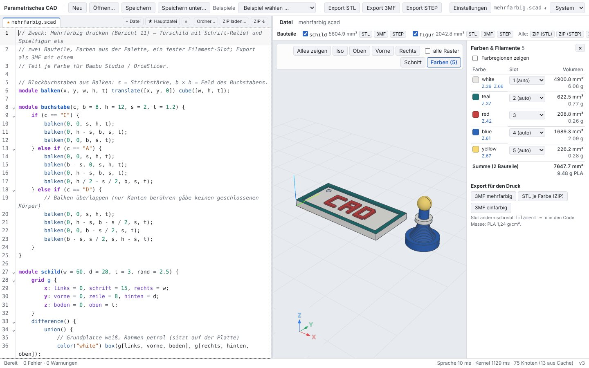
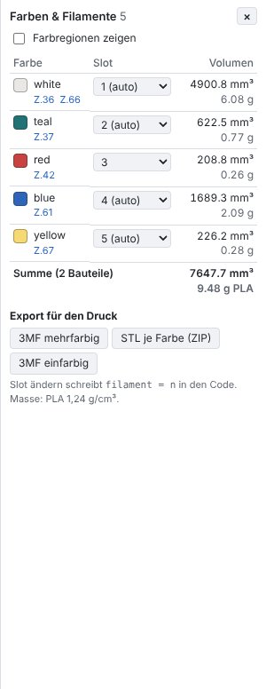
F02 Slot per Dropdown
Slot von teal auf 5: der Editor bekommt color("teal", filament = 5) (Text-Edit über die Engine, rückgängig machbar), blue rückt auf den freien Slot 2. „automatisch“ entfernt das Argument wieder. Material ohne color() ist immer Filament 1.
- Text enthält color("teal", filament = 5)
- Slots danach white 1, teal 5, red 3, blue 2, yellow 4
- automatisch: Text wieder wie vorher
- Standard-Eintrag ohne Auswahl
F03 Export für Bambu Studio / OrcaSlicer
„3MF mehrfarbig“: ein Objekt je Bauteil (schild, figur), darin ein Teil je Farbe ohne Verschiebung, Farbgruppe mit fünf Farben, Metadata/model_settings.config mit extruder je Teil. „STL je Farbe“: ZIP mit sechs Dateien F<slot>_<farbe>.stl. „3MF einfarbig“ ohne Farben.
- 2 Build-Items, 6 Komponenten, 5 m:color
- schild – red → extruder 3
- ZIP mit 6 STL (Bauteil_F<slot>_<farbe>.stl)
- einfarbig ohne colorgroup
F04 Farbregionen in der Ansicht
„Farbregionen zeigen“: statt der Farbe je Fläche die Körper je Farbe, wie sie exportiert werden (sechs Körper: drei je Bauteil).
- 6 Regionskörper gezeichnet
- 532 gelbe Pixel
- aus: wieder Farbe je Fläche
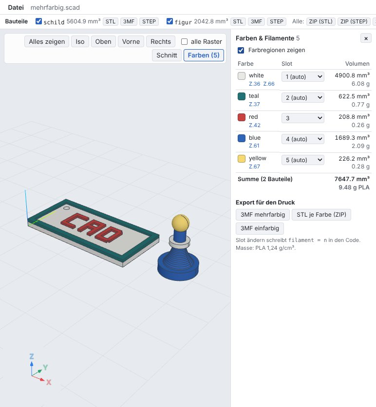
F05 Dunkles Thema
Thema „Dunkel“: Panels, Editor (Syntax, Zeilennummern, Suchleiste), Statusleiste und Farbliste dunkel, Kontrast der Texte ≥ 4,5 (computed styles); 3D-Ansicht mit dunklem Hintergrund, Palette-Farben in der dunklen Variante (teal #307e80 statt #217274), Export nutzt die Grundwerte.
- Text auf Hintergrund: 15.15
- Editor-Text: 14.19
- Zeilennummern: 7.37
- Statusleiste: 7.37
- Farbliste: 14.19
- Werkzeugleiste: 12.80
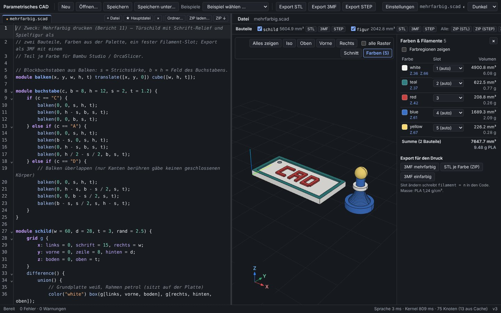
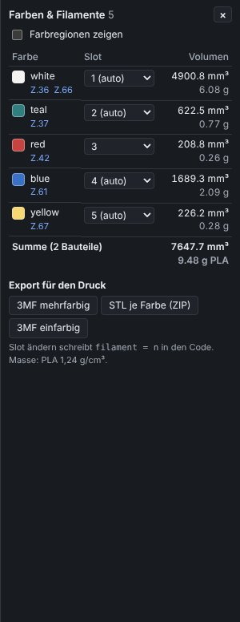
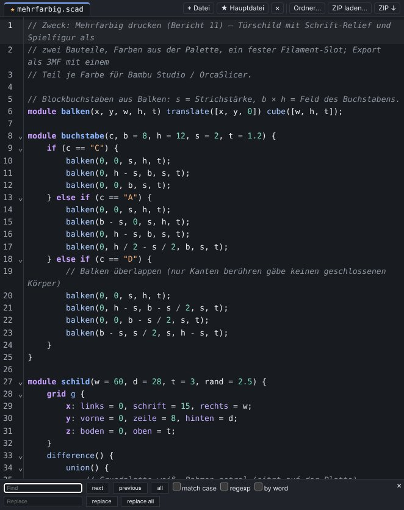
F06 Thema „System“
Standard ist „System“: das Thema folgt prefers-color-scheme, auch beim Umschalten im laufenden Betrieb; „Hell“/„Dunkel“ sind fest und bleiben nach dem Neuladen.
- System + dunkel → dark, dann hell → light, dunkel → dark
- fest Hell bleibt bei dunklem System
- Wahl übersteht Neuladen
F07 Unbekannte Farbe
color("lightblue"): Warnung am Argument „Farbe lightblue unbekannt – Zufallsfarbe (Palette: …)“, die Farbe kommt aus dem Hash des Namens (gleich für LightBlue, gleiche Helligkeit und Sättigung wie die Palette); „Teal“ (Groß/Klein egal) ist die Palettenfarbe.
- Zufallsfarbe #bd70af für lightblue und LightBlue
- Warnung in Zeile 1
- Teal = Palette
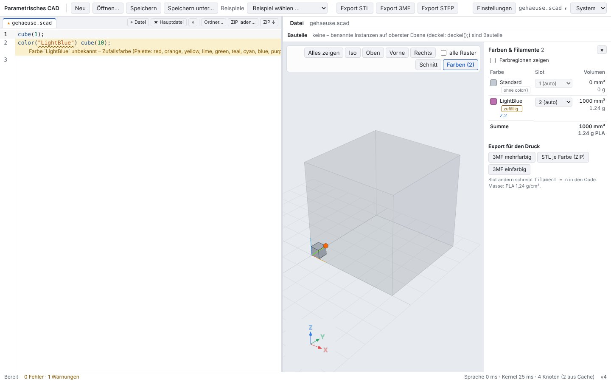
Desktop-App (Tauri, nativer Kernel)
T12 Farben & Filamente in Tauri: Liste, Slot ändern, 3MF mehrfarbig (nativer Kernel)
- Farben white:1, teal:2, red:3, blue:4, yellow:5
- schild: Summe 5604.873 = 5604.873 mm³
- figur: Summe 2042.797 = 2042.797 mm³
- teal fest auf Slot 5
- Datei als geändert markiert
- 3MF: {"files":[],"mColors":5,"colorGroup":true,"modelSettings":true,"items":2,"colors":true,"components":6,"bytes":605695,"extruders":[1,1,5,3,2,2,1,4],"triangles":8434}
- extruder je Teil 1,1,5,3,2,2,1,4
- STL je Farbe: schild_F1_white.stl, schild_F5_teal.stl, schild_F3_red.stl, figur_F2_blue.stl, figur_F1_white.stl, figur_F4_yellow.stl
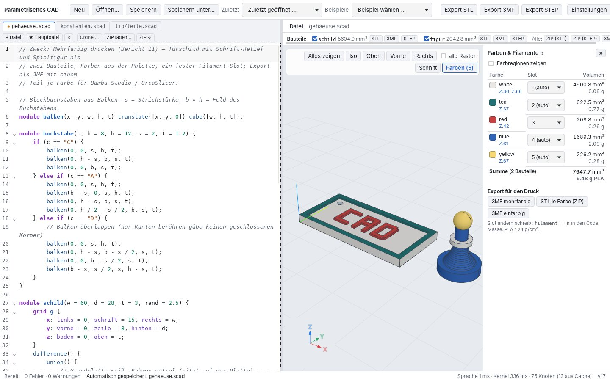
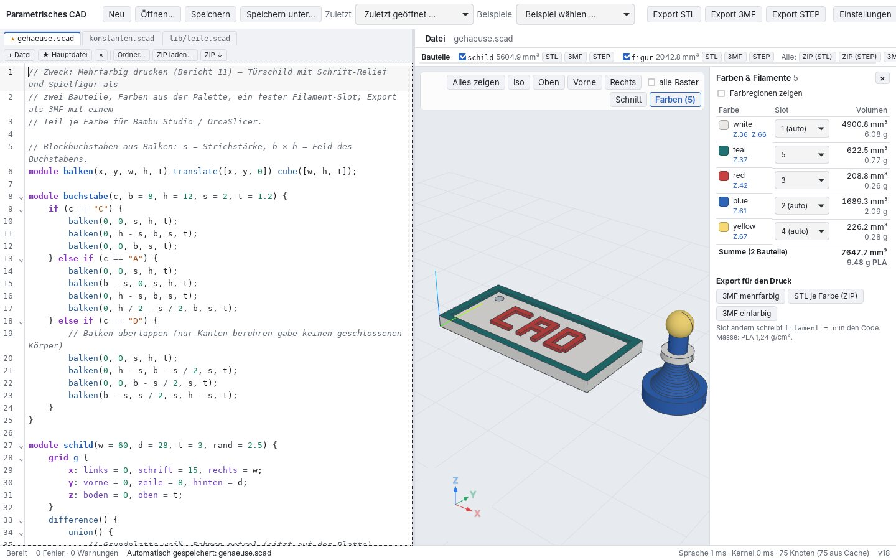
T13 Dunkles Thema in Tauri: Kontrast (computed styles), Ansicht, Editor
- Text: Kontrast 15.15 ≥ 4,5
- Editor: Kontrast 14.19 ≥ 4,5
- Statusleiste: Kontrast 7.37 ≥ 4,5
- Farbliste: Kontrast 14.19 ≥ 4,5
- Werkzeugleiste: Kontrast 12.80 ≥ 4,5
- teal dunkle Variante (rgb(48, 126, 128))
- Farbe je Fläche in der Ansicht
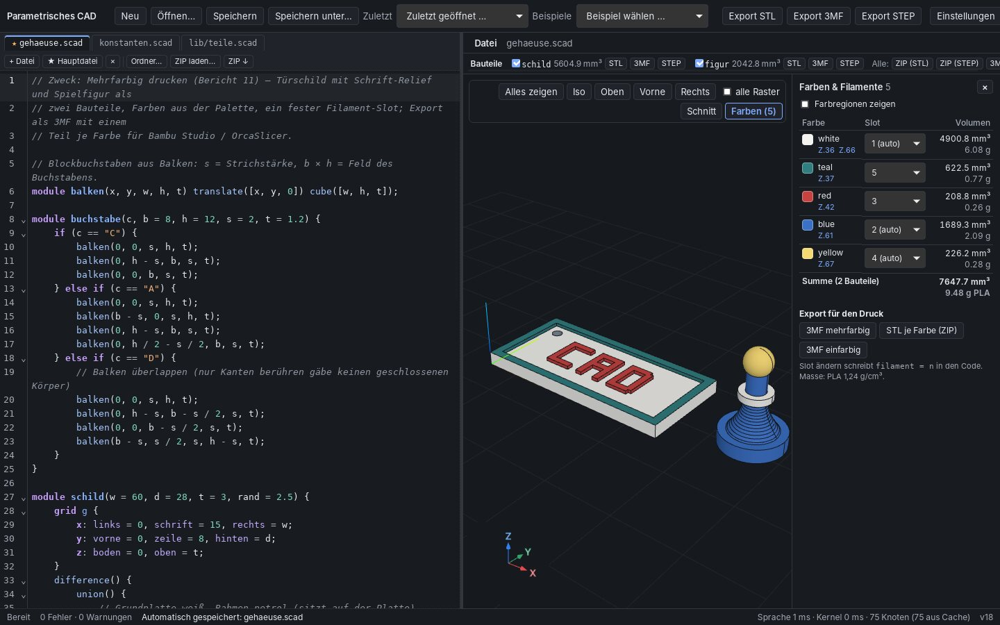
T14 Thema „System“ in Tauri folgt dem GTK-Farbschema (prefers-color-scheme)
- System (hell) → data-theme light
- WebKitGTK meldet prefers-color-scheme: dark mit GTK_THEME=Adwaita:dark (true)
- Thema System → dark
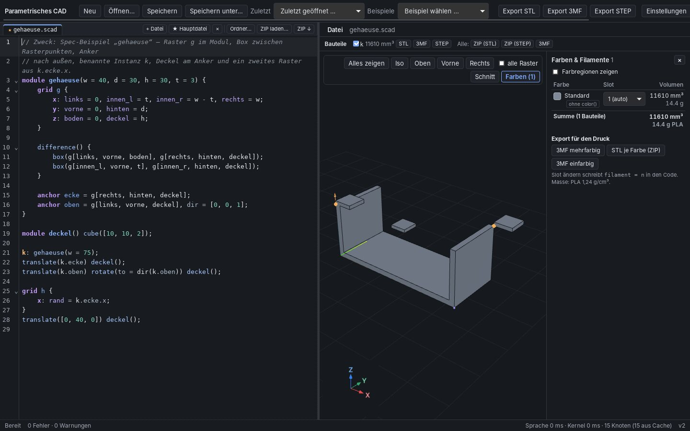
8 Dunkles Thema
- Auswahl in der Werkzeugleiste: System (Standard; folgt
prefers-color-schememit Listener, auch beim Umschalten im Betrieb), Hell, Dunkel; gespeichert inlocalStorage(cad-theme). In Tauri meldet WebKitGTK das GTK-Farbschema (Test T14 mitGTK_THEME=Adwaita:dark). - Token je Thema in
styles.css: Flächen, Text, Akzent, Fehler/Warnung (auch Zeilenhintergründe), Syntax, Auswahl, Hover, Diff-Ansicht, Schatten, Rückseite von Dialogen, Farbfelder; 3D-Ansicht (Hintergrund, Boden und Raster, Modell, Kanten, Hervorhebung, Dimmen, Zonen, abgezogene Körper, Schnittkappe, Griffe samt Füllung, Anker, Snap mit eigener Schriftfarbe), Git-Rand. Die 3D-Ansicht liest die Token beim Wechsel neu. - Editor-Teile mit eigenem Standardthema (CodeMirror: Autovervollständigung, Suchleiste, Treffer, Klammerpaare, Faltmarken) folgen jetzt den Token; vorher blieben sie im dunklen Thema hell.
- Prüfung:
web/src/logic/contrast.test.tsrechnet für alle Paare den WCAG-Kontrast aus den Token (durchscheinende Hintergründe über der Fläche gemischt): Text ≥ 4,5:1, UI-Teile ≥ 3:1; F05 und T13 messen dieselben Paare übergetComputedStylein Chromium und WebKitGTK, F05 zusätzlich Pixel der 3D-Ansicht (Hintergrund, Palette-Variante).
| Paar | Token | hell | dunkel | Ziel |
|---|---|---|---|---|
| Text | --text auf --panel | 15,80 | 14,19 | 4,5 |
| Text gedämpft | --muted auf --panel | 5,80 | 7,37 | 4,5 |
| Text gedämpft auf Fläche 2 | --muted auf --panel-2 | 5,17 | 6,65 | 4,5 |
| Akzent (Links, Zeilen der Farbliste) | --accent auf --panel | 5,71 | 7,47 | 4,5 |
| Fehler | --error auf --panel | 5,52 | 6,89 | 4,5 |
| Fehler auf Fehlerzeile | --error auf --error-bg | 4,66 | 5,62 | 4,5 |
| Warnung auf Warnzeile | --warning auf --warning-bg | 5,48 | 7,20 | 4,5 |
| Syntax: Schlüsselwort | --hl-keyword auf --panel | 6,27 | 8,19 | 4,5 |
| Syntax: Zahl | --hl-number auf --panel | 5,13 | 10,27 | 4,5 |
| Syntax: Text | --hl-string auf --panel | 5,65 | 9,16 | 4,5 |
| Syntax: Kommentar | --hl-comment auf --panel | 5,40 | 5,76 | 4,5 |
| Syntax: Kommentar in aktiver Zeile | --hl-comment auf --active-line | 5,05 | 5,11 | 4,5 |
| Syntax: Definition | --hl-def auf --panel | 6,27 | 8,27 | 4,5 |
| Syntax: Modifier | --hl-modifier auf --panel | 5,68 | 7,57 | 4,5 |
| Text auf Auswahl | --text auf --accent-soft | 13,34 | 10,17 | 4,5 |
| Text auf Diff (neu) | --text auf --diff-add | 13,32 | 10,30 | 4,5 |
| Text auf Diff (gelöscht) | --text auf --diff-del | 13,17 | 11,31 | 4,5 |
| Schrift auf Akzent | --on-accent auf --accent | 5,71 | 8,10 | 4,5 |
| Snap-Beschriftung | --on-snap auf --view-snap | 5,38 | 9,00 | 4,5 |
| Git-Rand neu (UI, ≥ 3) | --git-added auf --panel | 3,49 | 7,36 | 3,0 |
| 3D: Kanten auf Modell (≥ 3) | --view-edge auf --view-model | 6,34 | 5,38 | 3,0 |
| 3D: Raster auf Hintergrund (≥ 3) | --view-grid auf --view-bg | 5,35 | 6,78 | 3,0 |
9 Tests
cargo test --workspace: 388 bestanden, 0 fehlgeschlagen, 0 ignoriert;cargo clippy --workspace --all-targets -- -D warnings: ohne Befund;cargo fmt --all --check: ohne Befund.- Web:
pnpm typecheck, Vitest 193 (neu:colors.test.ts,contrast.test.ts), Playwright 84/84 (alle bisherigen Szenarien und F01–F07). - Tauri-E2E 14/14 (T01–T11 wie in Bericht 9, neu T12–T14).
- Bei den Läufen gefunden und behoben: (1) die Farbliste ist standardmäßig offen und fragte für jede fertige Szene Regionen an; bei Bauteilen ohne Farbe kostete das eine Volumenrechnung im Kernel, die mit dem auf 1,5 s gesetzten Watchdog in C19 einen zweiten Neustart auslöste – jetzt ohne Kernel-Aufruf (gecachtes Bauteilvolumen). (2) T08: bei offener Farbliste bricht die Ansichtsleiste um, die Schnittleiste lag über der zweiten Zeile („element click intercepted“) – beide stehen jetzt untereinander in einem Container. (3) Unregelmäßiger Fehler in
supervisor_watchdog_replaces_engine_and_blocks_key(1 von 5 Läufen, schon vor diesem Auftrag): der Eingabe-Thread der Desktop-Engine reichte die Nachrichten eines Frames einzeln weiter, sodassSetSourceund__debugHangin zwei Durchläufe der Engine-Schleife fallen konnten und ein anderer Knoten gesperrt wurde; ein Frame ist jetzt eine Kanal-Nachricht (8/8 Läufe grün). (4) P07 erwartete das alte einfarbige 3MF der Bauteilleiste (jetzt mehrfarbig: Build-Items statt Objekte gezählt). - OpenSCAD-Vergleich
compare.py --eval: 33/33 (keines der 33 Modelle nutztcolor(); Geometrie unverändert); STEPverify.pymit OpenCASCADE: 48/48 passed.
| Test | Prüft | Ergebnis |
|---|---|---|
display_variantscad-eval/tests/palette.rs | Anzeige-Varianten: gleicher Farbton, Helligkeit nur wo nötig, Kontrast zum Ansichtshintergrund | ok |
children_inherit_the_colourcad-eval/tests/palette.rs | Kinder erben die Farbe, inneres color() gewinnt | ok |
filament_parametercad-eval/tests/palette.rs | filament = n: Bereich 1–16, ganzzahlig, Widerspruch warnt, nicht positionell | ok |
hex_vectors_and_alpha_stay_exactcad-eval/tests/palette.rs | #rgb, #rrggbbaa, Vektoren, alpha exakt; kaputtes Hex warnt | ok |
palette_ts_is_currentcad-eval/tests/palette.rs | generierte Tabelle web/src/logic/palette.ts aktuell | ok |
palette_names_case_insensitivecad-eval/tests/palette.rs | Namen Groß/Klein egal, grey = gray, Werte der Palette | ok |
unknown_name_warns_and_gets_a_stable_random_colourcad-eval/tests/palette.rs | Warnung am Argument, stabile Zufallsfarbe (Hash), L/C wie Palette, verschiedene Farbtöne, keine deutschen Aliasse | ok |
palette_is_distinguishablecad-eval/tests/palette.rs | ΔE_OK ≥ 0,10 normal, ≥ 0,065 Deuteranopie, ≥ 0,05 Protanopie, ≥ 0,025 Tritanopie; Chroma ≤ 0,18, keine puren Farben | ok |
unchanged_value_gives_no_editcad-eval/tests/filament_edit.rs | gleicher Wert: kein Edit | ok |
slot_is_added_to_the_first_statementcad-eval/tests/filament_edit.rs | ohne Slot: , filament = n an die erste Anweisung der Farbe | ok |
existing_slots_are_replaced_or_removedcad-eval/tests/filament_edit.rs | vorhandene Slots ersetzt (alle Schreibweisen der Farbe), „automatisch“ entfernt sie | ok |
filament_slotscad-engine/tests/colors.rs | explizite Slots, niedrigster freier Slot, gleiche Farbe in drei Schreibweisen = ein Eintrag | ok |
later_statement_wins_overlapscad-engine/tests/colors.rs | Überlappung: spätere Anweisung gewinnt (500 / 1000 mm³) | ok |
multicolour_3mf_structurecad-engine/tests/colors.rs | 3MF: Dateien, Farbgruppe, Objekte, Komponenten ohne Transformation, model_settings.config (Teil-ID = Netz-ID, extruder), STL je Farbe | ok |
nested_colour_wins_over_its_parentcad-engine/tests/colors.rs | inneres color() gewinnt über das äußere | ok |
region_meshes_share_coordinatescad-engine/tests/colors.rs | Netze der Regionen: Volumen, gemeinsame Koordinaten | ok |
resize_scales_the_colour_materialcad-engine/tests/colors.rs | resize beim Platzieren der Farbkörper | ok |
fillet_between_colours_goes_to_the_first_coloured_subtreecad-engine/tests/colors.rs | Verrundung zwischen zwei Farben → erste Farbe; Volumensumme | ok |
regions_are_cached_and_colour_changes_recompute_no_nodescad-engine/tests/colors.rs | Regionen gecacht (0 Kernel-Aufrufe), Farb-/Slot-Änderung rechnet keinen Knoten neu | ok |
transforms_and_modulescad-engine/tests/colors.rs | Module, Schleifen, Drehungen | ok |
uncoloured_material_is_the_default_colour_on_filament_1cad-engine/tests/colors.rs | ungefärbtes Material = Standard, Slot 1 | ok |
subtracted_material_counts_for_all_colourscad-engine/tests/colors.rs | Abgezogenes gilt für alle Farben; Farbe nur im Abzug: kein Slot | ok |
uncoloured_part_needs_no_booleancad-engine/tests/colors.rs | ohne Farbknoten: eine Standard-Region ohne Boolean, Volumen = Bauteilvolumen, Netz mit allen Körpern | ok |
colour_regions_with_meshescad-session/tests/colors.rs | RequestColorRegions mit Netzen, alte Version wird verworfen | ok |
scene_lists_colours_with_slotscad-session/tests/colors.rs | Protokoll: Scene.colors (auch vorläufige Szene), Warnung an Zeile 3 | ok |
multicolour_exportscad-session/tests/colors.rs | Export 3MF (Standard mehrfarbig), colors: false, STL je Farbe | ok |
set_filament_writes_the_codecad-session/tests/colors.rs | SetFilament → Edits, rückgängig, Fehlerfälle | ok |
measure_colourscad-cli/tests/colors.rs | cad measure --colors: Volumen, Masse 1,24 g/cm³, Bauteile | ok |
outline_lists_colours_slots_and_volumescad-cli/tests/colors.rs | cad outline: Farben, Slots, Volumen, Summe je Bauteil, ohne Kernel ohne Volumen | ok |
render_theme_and_regionscad-cli/tests/colors.rs | cad render --theme dark --show regions: dunkler Hintergrund (Pixel), 6 Regionskörper | ok |
export_multicolour_single_and_per_colourcad-cli/tests/colors.rs | cad export mehrfarbig, --single-color, --per-color, STL einfarbig | ok |
| Tauri-E2E | Szenario | Dauer | Ergebnis |
|---|---|---|---|
| T01 | App startet mit Datei, Szene erscheint (nativer Kernel) | 2,2 s | ok |
| T02 | Externe Änderung ohne ungespeicherte Änderungen: still neu geladen, Undo als eigener Schritt | 0,8 s | ok |
| T03 | Git-Markierungen am Rand (neu, geändert, gelöscht) | 1,0 s | ok |
| T04 | Externe Änderung bei ungespeicherten Änderungen: Hinweisleiste, Vergleichen, Meine behalten, Speichern ohne Schleife | 2,5 s | ok |
| T05 | Gelöschte und umbenannte Datei | 1,3 s | ok |
| T06 | Agent-Ablauf: Datei per Shell ändern, cad check, UI folgt (Bildfolge) | 1,1 s | ok |
| T07 | cad ui status / show / screenshot gegen die laufende App | 1,0 s | ok |
| T08 | Schnittansicht in Tauri (Kappe, Kontur, Ziehen, CLI-Aufruf) | 3,9 s | ok |
| T09 | Watchdog in Tauri: hängender Kernel → Engine-Prozess ersetzt, Knoten gesperrt | 8,0 s | ok |
| T10 | Ordner als Projekt, Autospeichern | 3,3 s | ok |
| T11 | Tastendruck → Szene nativ (Messung) | 11,3 s | ok |
| T12 | Farben & Filamente in Tauri: Liste, Slot ändern, 3MF mehrfarbig (nativer Kernel) | 3,4 s | ok |
| T13 | Dunkles Thema in Tauri: Kontrast (computed styles), Ansicht, Editor | 0,6 s | ok |
| T14 | Thema „System“ in Tauri folgt dem GTK-Farbschema (prefers-color-scheme) | 4,2 s | ok |
10 Anleitung: In Bambu Studio öffnen
Im Container gab es kein Bambu Studio; diese Schritte bitte selbst prüfen. Beschrieben ist, was nach dem Quellcode zu erwarten ist.
- Exportieren: in der UI „Farben & Filamente“ → 3MF mehrfarbig (bei Bauteilen ein Objekt je Bauteil) oder
cad export modell.scad -o modell.3mf. Die Farbliste zeigt vorher Slot, Volumen und Masse je Farbe; Slots ändern sich über die Auswahl (schreibtfilament = n). - In Bambu Studio Datei → Importieren → 3MF/STL… (Strg+I) wählen (oder die Datei ins Fenster ziehen bzw. „Projekt öffnen“). Die Datei stammt nicht von Bambu Studio; erwartet ist der Hinweis, dass nur Geometrie (und Farben) geladen werden – das ist richtig so.
- Farbdialog (aktuelle Versionen): Bambu Studio zeigt die Farben der Datei (z. B. weiß, petrol, rot, blau, gelb) und schlägt Filamente dafür vor. Mit „Append“ / „Anhängen“ werden die Farben als neue Filamente angelegt, mit der Zuordnung zu vorhandenen Filamenten die Farben auf die Slots im AMS gelegt; bestätigen. Bei Farben je Teil bleibt jedes Teil ganz in seinem Filament.
- Ohne Farbdialog (ältere Version, OrcaSlicer oder abgebrochen): die Slots aus der Datei gelten. In der Objektliste (links) erscheinen die Objekte
schildundfigur; aufgeklappt je ein Teil pro Farbe („schild – white“, „schild – teal“, „schild – red“ …), daneben die Filamentnummer (1, 2, 3 …). Fehlende Filamente ergänzt Bambu Studio beim Import bis zum höchsten Slot (mit eigenen Farben); dann in der Filamentleiste die richtigen Farben/AMS-Slots wählen („AMS synchronisieren“). - Prüfen: die Teile eines Objekts sitzen genau aufeinander (gemeinsamer Ursprung), die Schrift steht als Relief auf der Platte, der Kragen sitzt am Hals der Figur. „Objekte anordnen“ verschiebt nur ganze Objekte.
- Slicen: in der Vorschau die Ansicht „Filament“ wählen – jede Farbe in ihrer Farbe, Filamentwechsel an den Farbgrenzen, Prime Tower bei mehreren Filamenten. Masse je Filament mit der Farbliste vergleichen (PLA 1,24 g/cm³; der Slicer rechnet mit Wänden/Füllung, daher anders).
OrcaSlicer: wie oben ohne Farbdialog – Teile und Slots aus model_settings.config, Filamentfarben selbst setzen. PrusaSlicer liest diese Metadaten nicht: dort „STL je Farbe (ZIP)“ nehmen, alle STL zusammen laden und bei „Mehrteiliges Objekt?“ Ja wählen, dann je Teil den Extruder setzen (Dateinamen F<slot>_<farbe>.stl).
11 Bekannte Grenzen
- Farbregionen hängen an den Booleans von SMLib: wo SMLib Material verliert (z. B. Vereinigung mit einem Torus, bekannt seit Bericht 1 – das Beispiel nutzt deshalb einen Ring aus einem Zylinder), stimmen die Regionen nicht, die Engine warnt („Summe ≠ Volumen“) oder meldet einen Fehler. Je Farbknoten etwa drei Booleans; die UI fragt die Regionen nur bei offener Farbliste an.
- Kanten, die nur auf einer Linie zusammenstoßen, ergeben keinen geschlossenen Körper (beim ersten Buchstaben „D“ gefunden: zwei Balken berührten sich nur an einer Kante, lib3mf meldete das Netz als nicht mannigfaltig; jetzt überlappen sie).
color()in 2D-Teilbäumen (unterlinear_extrudeusw.) färbt Flächen, teilt aber kein Volumen. Material außerhalb der Bauteile fehlt in der Farbliste, wenn es Bauteile gibt.- Filamentfarben in Bambu Studio über den Farbdialog oder von Hand (kein
project_settings.config, siehe 5.6); in Bambu Studio und OrcaSlicer nicht im Container geprüft. PrusaSlicer: Komponenten werden eigene Objekte, keine Slots. - Farbe je Fläche in der Ansicht über den Flächen-Tag: zwei inhaltsgleiche Körper mit verschiedenen Farben teilen sich einen Tag und zeigen beide die erste Farbe (bekannte Grenze der Provenienz); „Farbregionen zeigen“ ist davon nicht betroffen.
- Farbfehlsichtigkeit: siehe Abschnitt 2 (kleinste ΔE bei Deuteranopie 0,070, Tritanopie 0,031). Weiß auf hellem und Schwarz auf dunklem Hintergrund nur über Schattierung und Kanten unterscheidbar.
- Thema „System“ in Tauri hängt am GTK-Farbschema; unter Xvfb ohne Schema ist es hell. Messwerte und Bilder unter Xvfb/SwiftShader ohne GPU.
12 Reproduktion
export SMLIB_PREBUILT=$PWD/smlib/build-native CAD_NO_DAEMON=1 cargo build --release -p cad-cli # nach: cd web && pnpm build:tauri cargo test --workspace --no-fail-fast > reports/tmp/report11/cargo.txt 2>&1 cargo clippy --workspace --all-targets -- -D warnings > reports/tmp/report11/clippy.txt 2>&1 cargo fmt --all --check > reports/tmp/report11/fmt.txt (cd web && pnpm typecheck && pnpm test > ../reports/tmp/report11/vitest.txt && pnpm e2e) cp reports/tmp/report2/playwright.json reports/tmp/report11/ node web/e2e-tauri/desktop.e2e.mjs --bin target/release/cad --out reports/tmp/report11/tauri CAD=target/release/cad python3 tests/openscad-compat/compare.py --eval > reports/tmp/report11/compare.txt /opt/tools/venv-step/bin/python tests/step/verify.py --cad target/release/cad > reports/tmp/report11/step.txt CAD=target/release/cad PY3MF=/pfad/venv/bin/python tools/report/report11-data.sh # lib3mf, trimesh node tools/report/report11.mjs node tools/report/print-pdf.mjs docs/reports/11-farben-filamente/report.html docs/reports/11-farben-filamente/report.pdf "Testbericht 11: Farben, Multi-Filament-3MF, dunkles Thema"